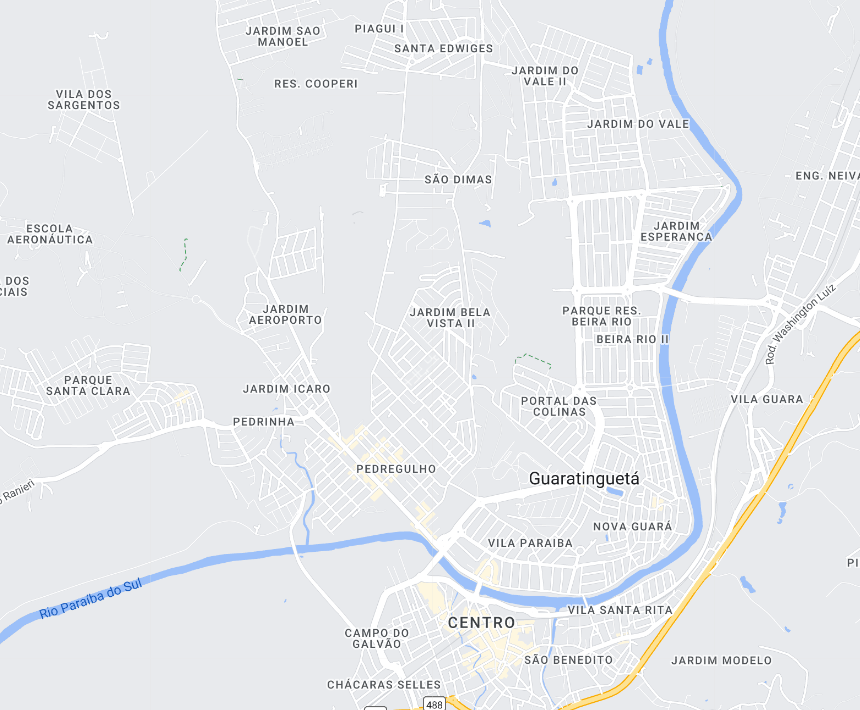

Guaratinguetá - Geodex

Município de Guaratinguetá
-
Populacão: 123.192 pessoas
-
Área: 752,636km²
-
Fundação: 19 de Setembro de 1630
-
Distância da Capital: 177km
Guaratinguetá é uma cidade localizada no estado de São Paulo, Brasil. Fundada em 1630, a cidade tem uma história rica e diversificada. Foi um importante centro durante o ciclo do ouro, servindo como ponto de passagem para as bandeiras que exploravam o interior do país. Ao longo dos anos, a cidade se desenvolveu como um centro religioso, sendo o berço de importantes instituições católicas. Também teve papel relevante na formação histórica e política do país, sendo palco de importantes eventos durante a independência do Brasil. Atualmente, Guaratinguetá é conhecida por sua cultura, belezas naturais e por abrigar instituições de ensino renomadas.